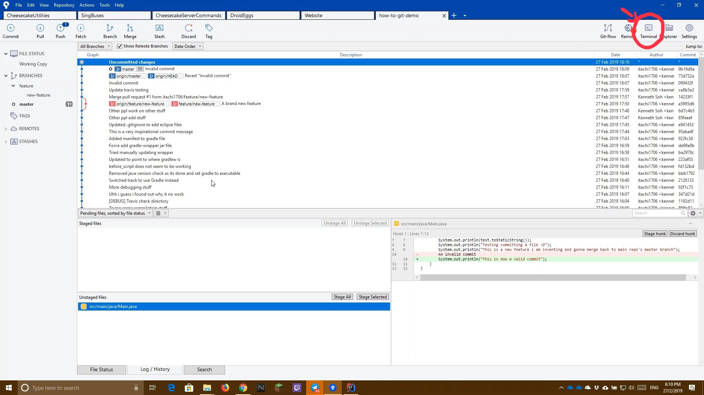
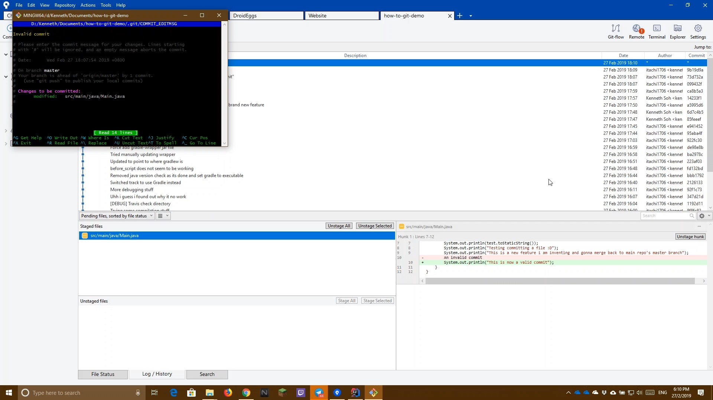

This guide briefly shows you how you can amend any unpushed commits. It is useful if you forgot a single line and do not want to have a new commit for it. Console usage is required Note: This will only work for the latest commit, other commits will require advanced git use
Stage all file changes you wish to add to the commit by selecting them and clicking either Stage All or Stage Selected
Select the Terminal button

Execute the following command
git commit --amend
Update your commit message and save and exit it (In the nano app as shown in the picture below, its Ctrl+O and Ctrl+W)

You are done!
Demo Video The following is a video on how this is being done. Read the how-to guide before watching the video for actual steps to do it